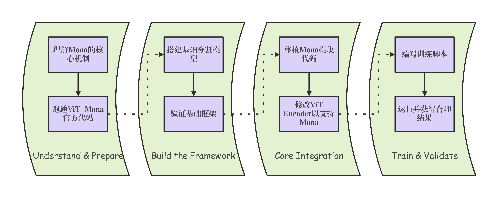

Foreword
北京已经快入冬了。笔者今早差点冻死在自行车上。
最近事情很多很多，但是想了一想还是觉得需要写一篇博客记录这段不凡的旅程。如若没有一个稳定的记录，恐怕过几天也会被笨人遗忘，故下定决心以记之。
此外，笔者忙里偷闲安置了一个子域名网站做随笔日记本，但是cloudflare配置最近出了点问题，感兴趣的朋友可以先搜索http://101.200.30.9:6277/（放在这里会不会不太安全），后续将以echo.0mnilink.top的形态和大家见面，笔者会在里面定期真实发疯，更抽象、更贴近生活😮
Beginning of the story
我们的核心目标就是学习、了解adaptor微调模型的部分细节与项目框架，并且和调研需求紧密结合，最后给出一个比较reasonable的result，思路流程如图所示： 
这篇博客将作为记录型博客持续更新，伴随笔者完成每一步的任务！事不宜迟，准备出发！
Understand & Prepare
理解Mona的核心机制
我们根据经验，为自己准备了三个主线任务：
- 输入/输出： 搞清楚Mona模块的forward函数接收哪些输入，输出什么。记下它们的维度信息（如 [Batch, Num_Heads, Seq_Len, Head_Dim]）。
- 作用位置： 明白Mona是在Transformer的哪个具体计算步骤中起作用的。是在Q, K, V投影之后，Attention分数计算之前吗？还是作用于FFN层？。
- 核心参数： 知道rank (秩) 是控制Mona参数量的关键超参数。理解rank越大，引入的参数越多，拟合能力可能越强，但训练成本也越高。
Input/Output of Mona module
1 | class MonaOp(nn.Module): |
Mona 模块的 forward 函数接收 两个 input：
- x: 这是主要的特征张量，是上一层（MSA或MLP）的输出。
- 维度: [B, L, C]
- B: Batch Size
- L: Sequence Length = H * W
- C: Channel / Embedding Dimension (特征维度)
- 维度: [B, L, C]
- hw_shapes: 这是一个包含特征图高度和宽度的元组
(tuple)。
- 作用: 这个参数至关重要，因为 Mona 模块内部需要进行卷积操作。它必须知道如何将长度为 L 的序列 x 重新塑形 (reshape) 回 [H, W] 的二维空间网格。
Mona 模块的 forward 函数输出 一个 output：
- identity + project2:
- 维度: [B, L, C]
- 输出的维度与输入的特征张量 x 完全相同。这是为了确保它可以无缝地接入Transformer的残差连接结构中。
- 维度: [B, L, C]
Action Position
1 | class SwinTransformerBlock(nn.Module): |
SwinTransformerBlock的forward函数中调用两次Mona模块：
self.my_module1:位于MSA(Multi-Self-Attention)之后，接收经过MSA和其残差连接的特征，并对之进行适配。
self.my_module2:位于MLP之后，接收经过MLP和其残差连接的特征，也同样进行适配。
因此Mona是一个独立的后处理模块，被放置在 Transformer
Block 的两个核心计算单元（MSA 和
MLP）的输出位置，对它们的处理结果进行增强和适配。
Core Parameters
1 | self.project1 = nn.Linear(in_dim, 64) # Down-projection to n=64 |
核心超参数: 中间维度 n
n 的大小直接控制了 Mona 模块的参数量和计算复杂度。n 越大，降维后的信息损失越少，拟合能力可能越强，但同时引入的参数也越多。
If you like this blog or find it useful for you, you are welcome to comment on it. You are also welcome to share this blog, so that more people can participate in it. If the images used in the blog infringe your copyright, please contact the author to delete them. Thank you !